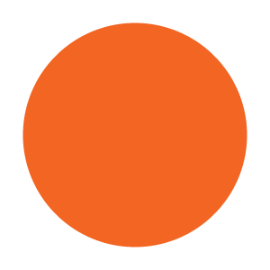

<!DOCTYPE html>
<html lang="ja">
<html>
  <head>
    <meta charset="utf-8">
    <title>My experiment</title>
    <script src="https://unpkg.com/jspsych@7.0.0"></script>
    <script src="https://unpkg.com/@jspsych/plugin-html-keyboard-response@1.0.0"></script>
    <script src="https://unpkg.com/@jspsych/plugin-image-keyboard-response@1.0.0"></script>
    <script src="https://unpkg.com/@jspsych/plugin-preload@1.0.0"></script>
    <link href="https://unpkg.com/jspsych@7.0.0/css/jspsych.css" rel="stylesheet" type="text/css" />
    
    <!-- jsPsychSheet library -->
    <script src="https://brain2ai.github.io/jsPsychSheet/jspsychsheet.js"></script>
    <link rel="stylesheet" href="https://brain2ai.github.io/jsPsychSheet/jspsychsheet.css">

    <!-- jQuery -->
    <script src="https://ajax.googleapis.com/ajax/libs/jquery/3.7.1/jquery.min.js"></script>
    
  </head>
  <body></body>
  <script>

    /* initialize jsPsych */
    var jsPsych = initJsPsych({
      //timeline: timeline,
      //show_progress_bar: true,
      on_finish: function() {
        jsPsych.data.displayData();
        jsPsych.data.get().localSave('csv', 'data.csv');
        url = "https://script.google.com/macros/s/AKfycbzFcNvspC0ii_mrKWKoFRnuvsQl9mK6pHDuMCmRgjKy7Fqw6AhW1M31o_IF9O--9A138g/exec";
        jsPsychSheet.uploadData(url, jsPsych.data.get().csv());
      }
    });

    /* create timeline */
    var timeline = [];

    /* preload images */
    var preload = {
      type: jsPsychPreload,
      images: ['img/blue.png', 'img/orange.png']
    };
    timeline.push(preload);

    /* define welcome message trial */
    var welcome = {
      type: jsPsychHtmlKeyboardResponse,
      stimulus: "Welcome to the experiment. Press any key to begin."
    };
    timeline.push(welcome);

    /* define instructions trial */
    var instructions = {
      type: jsPsychHtmlKeyboardResponse,
      stimulus: `
        <p>In this experiment, a circle will appear in the center 
        of the screen.</p><p>If the circle is <strong>blue</strong>, 
        press the letter F on the keyboard as fast as you can.</p>
        <p>If the circle is <strong>orange</strong>, press the letter J 
        as fast as you can.</p>
        <div style='width: 700px;'>
        <div style='float: left;'></img>
        <p class='small'><strong>Press the F key</strong></p></div>
        <div style='float: right;'></img>
        <p class='small'><strong>Press the J key</strong></p></div>
        </div>
        <p>Press any key to begin.</p>
      `,
      post_trial_gap: 1000
    };
    timeline.push(instructions);

    /* define fixation and test trials */
    var show = {
      type: jsPsychHtmlKeyboardResponse,
      stimulus: '<p style="font-size:60px;">式</p>',
      choices: "NO_KEYS",
      trial_duration: 3000 ,
      post_trial_gap: 1000 
      /*trial_duration: function(){
        return jsPsych.randomization.sampleWithoutReplacement([250, 500, 750, 1000, 1250, 1500, 1750, 2000], 1)[0];
      },*/
    };

    timeline.push(show);

    /* define trial stimuli array for timeline variables */
    var test_stimuli = [
      { stimulus: '<div style="font-size:60px;">あ</div>', correct_response: 'j'},
      { stimulus: '<div style="font-size:60px;">い</div>', correct_response: 'j'},
      { stimulus: '<div style="font-size:60px;">う</div>', correct_response: 'j'},
      { stimulus: '<div style="font-size:60px;">え</div>', correct_response: 'j'},
      { stimulus: '<div style="font-size:60px;">お</div>', correct_response: 'j'}
    ];

    var interval = {
      type: jsPsychHtmlKeyboardResponse,
      stimulus: '<p style="font-size:60px;">+</p>',
      choices: "NO_KEYS",
      trial_duration: 1000 ,
      post_trial_gap: 1000 ,
      data: {
        task: 'interval'
      }
    };

    var test = {
      type: jsPsychHtmlKeyboardResponse,
      stimulus: jsPsych.timelineVariable('stimulus'),
      choices: ['f', 'j'],
      data: {
        task: 'response',
        //correct_response: jsPsych.timelineVariable('correct_response')
      }/*,
      on_finish: function(data){
        data.correct = jsPsych.pluginAPI.compareKeys(data.response, data.correct_response);
      }*/
    };

    /* define test procedure */
    var test_procedure = {
      timeline: [interval, test],
      timeline_variables: test_stimuli,
      repetitions: 5,
      randomize_order: true
    };
    timeline.push(test_procedure);

    /* define debrief */
    var debrief_block = {
      type: jsPsychHtmlKeyboardResponse,
      stimulus: function() {

        var trials = jsPsych.data.get().filter({task: 'response'});
        var correct_trials = trials.filter({correct: true});
        var accuracy = Math.round(correct_trials.count() / trials.count() * 100);
        var rt = Math.round(correct_trials.select('rt').mean());

        return `<p>You responded correctly on ${accuracy}% of the trials.</p>
          <p>Your average response time was ${rt}ms.</p>
          <p>Press any key to complete the experiment. Thank you!</p>`;

      }
    };
    timeline.push(debrief_block);

    /* start the experiment */
    /*jsPsych.init({
      timeline: timeline,
      show_progress_bar: true,
      on_finish: function () {
        jsPsych.data.displayData();
        url = "https://script.google.com/macros/s/AKfycbwVUHAYePjtroHgoG_M6ujWvDRgUI_ygNzCUHDr8JdKkZFXxwTtqTPueyMItqiyDr04/exec";
        jsPsychSheet.uploadData(url, jsPsych.data.get().csv());
      }
    });*/
    jsPsych.run(timeline);

  </script>
</html>
